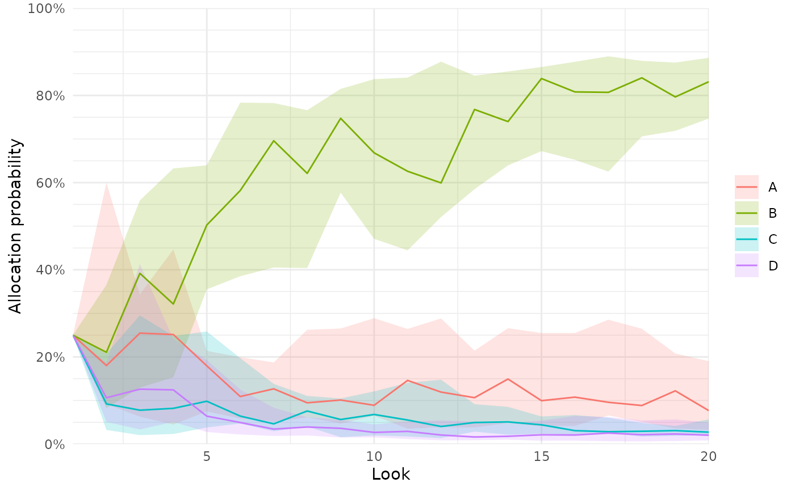
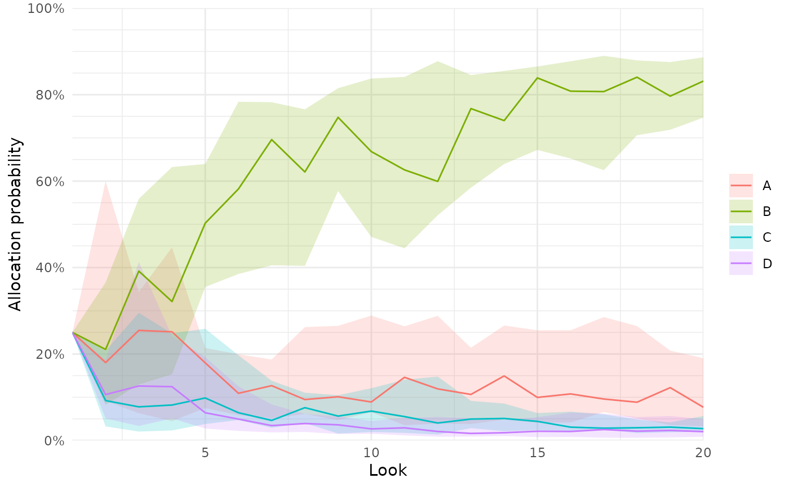

Plots the history of relevant metrics over the progress of a single or
multiple trial simulations. Simulated trials only contribute until the
time they are stopped, i.e., if some trials are stopped earlier than others,
they will not contribute to the summary statistics at later adaptive looks.
Data from individual arms in a trial contribute until the complete trial is
stopped.
These history plots require non-sparse results (sparse set to
FALSE; see run_trial() and run_trials()) and the ggplot2 package
installed.
Usage
plot_history(object, x_value = "look", y_value = "prob", line = NULL, ...)
# S3 method for trial_result
plot_history(object, x_value = "look", y_value = "prob", line = NULL, ...)
# S3 method for trial_results
plot_history(
object,
x_value = "look",
y_value = "prob",
line = NULL,
ribbon = list(width = 0.5, alpha = 0.2),
cores = NULL,
...
)Arguments
- object
trial_resultsobject, output from therun_trials()function.- x_value
single character string, determining whether the number of adaptive analysis looks (
"look", default), the total cumulated number of patients randomised ("total n") or the total cumulated number of patients with outcome data available at each adaptive analysis ("followed n") are plotted on the x-axis.- y_value
single character string, determining which values are plotted on the y-axis. The following options are available: allocation probabilities (
"prob", default), the total number of patients with outcome data available ("n") or randomised ("n all") to each arm, the percentage of patients with outcome data available ("pct") or randomised ("pct all") to each arm out of the current total, the sum of all available ("sum ys") outcome data or all outcome data for randomised patients including outcome data not available at the time of the current adaptive analysis ("sum ys all"), the ratio of outcomes as defined for"sum ys"/"sum ys all"divided by the corresponding number of patients in each arm.- line
list styling the lines as per
ggplot2conventions (e.g.,linetype,linewidth).- ...
additional arguments, not used.
- ribbon
list, as
linebut only appropriate fortrial_resultsobjects (i.e., when multiple simulations are run). Also allows to specify thewidthof the interval: must be between 0 and 1, with0.5(default) showing the inter-quartile ranges.- cores
NULLor single integer. IfNULL, a default value set bysetup_cluster()will be used to control whether extractions of simulation results are done in parallel on a default cluster or sequentially in the main process; if a value has not been specified bysetup_cluster(),coreswill then be set to the value stored in the global"mc.cores"option (if previously set byoptions(mc.cores = <number of cores>), and1if that option has not been specified.
Ifcores = 1, computations will be run sequentially in the primary process, and ifcores > 1, a new parallel cluster will be setup using theparallellibrary and removed once the function completes. Seesetup_cluster()for details.
Examples
#### Only run examples if ggplot2 is installed ####
if (requireNamespace("ggplot2", quietly = TRUE)){
# Setup a trial specification
binom_trial <- setup_trial_binom(arms = c("A", "B", "C", "D"),
control = "A",
true_ys = c(0.20, 0.18, 0.22, 0.24),
data_looks = 1:20 * 100)
# Run a single simulation with a fixed random seed
res <- run_trial(binom_trial, seed = 12345)
# Plot total allocations to each arm according to overall total allocations
plot_history(res, x_value = "total n", y_value = "n")
}
 if (requireNamespace("ggplot2", quietly = TRUE)){
# Run multiple simulation with a fixed random base seed
# Notice that sparse = FALSE is required
res_mult <- run_trials(binom_trial, n_rep = 15, base_seed = 12345, sparse = FALSE)
# Plot allocation probabilities at each look
plot_history(res_mult, x_value = "look", y_value = "prob")
# Other y_value options are available but not shown in these examples
}

if (requireNamespace("ggplot2", quietly = TRUE)){
# Run multiple simulation with a fixed random base seed
# Notice that sparse = FALSE is required
res_mult <- run_trials(binom_trial, n_rep = 15, base_seed = 12345, sparse = FALSE)
# Plot allocation probabilities at each look
plot_history(res_mult, x_value = "look", y_value = "prob")
# Other y_value options are available but not shown in these examples
}
